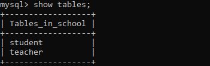

It is a type of sql command used to define the components of databases using database management systems . DDL in DBMS is used to create or modify the databse objects like tables, view etc. These commands deal with defining a schema and adding a table description to it.
Data Definition Language(DDL) commands in DBMS are used to define the database objects. We can create, delete and alter tables using DDL commands. Since a database structure is designed by DDL commands, they are called Data Definition Languages (DDLs). They consist of commands such as CREATE, ALTER, TRUNCATE, and DROP. When any data is being stored in a database, we need to create tables and define their structure DDL commands are used to do the same. For example, if a school wants to store its data in a database then we need to create tables like students and teachers. Furthermore, we need to define the structure of tables, for instance, the student's table will have columns like their roll no, name, age, date of birth, address, etc.
We can create a new database in MySQL by using the CREATE DATABASE statement with the below syntax:
Syntax- CREATE DATABASE [IF NOT EXISTS] database_name ;
Let us understand how to create a database in MySQL with the help of an example. Open the MySQL console and write down the password, if we have set during installation. Now we are ready to create a database. Here, we are going to create a database name "school" using the following statement:
MySQL> CREATE DATABASE school;

We can review the newly created database using the below query that returns the database name, character set, and collation of the database:
mysql> SHOW DATABASES ;
We can drop/delete/remove a MySQL database quickly with the MySQL DROP DATABASE command. It will delete the database along with all the tables, indexes, and constraints permanently. Therefore, we should have to be very careful while removing the database in MySQL because we will lose all the data available in the database.
Syntax-DROP DATABASE database_name;
The USE statement of MySQL helps you to select/use a database. You can also change to another database with this statement. Once you set the current database it will be same until the end of the session unless you change the it.
Syntax-USE database_name;
A table is used to organize data in the form of rows and columns and used for both storing and displaying records in the structure format. It is similar to worksheets in the spreadsheet application.
Syntax-CREATE TABLE [IF NOT EXISTS] table_name( column_definition1, column_definition2, ........, table_constraints );
The show or list table is very important when we have many databases that contain various tables. Sometimes the table names are the same in many databases; in that case, this query is very useful.
Syntax- SHOW TABLES;
DESCRIBE means to show the information in detail. Since we have tables in MySQL, so we will use the DESCRIBE command to show the structure of our table, such as column names, constraints on column names, etc.
Syntax- DESC table_name;
A SQL DROP TABLE statement is used to delete a table definition and all data from a table. This is very important to know that once a table is deleted all the information available in the table is lost forever, so we have to be very careful when using this command.
Syntax- DROP TABLE tablename;